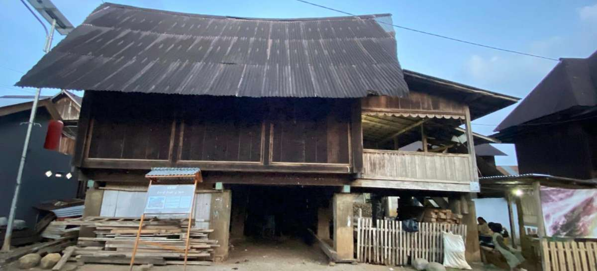

Ghuma Baghi gilapan
Sebuah jenis rumah adat dengan permukaan halus dan elemen finishing yang mengkilap.
Karakteristik
Ghuma Baghi Gilapan adalah jenis rumah adat Besemah yang memiliki ciri khas pada permukaan kayunya yang dihaluskan hingga tampak mengilap. Istilah "gilapan" berasal dari kata gilap, yang menggambarkan proses penghalusan dan perawatan kayu sehingga menghasilkan tampilan yang rapi dan elegan tanpa banyak ornamen ukiran. Rumah ini dibangun menggunakan sistem sambungan kayu tanpa banyak menggunakan paku besi, sehingga menunjukkan tingginya kemampuan teknik pertukangan tradisional masyarakat Besemah. Selain sebagai tempat tinggal, Ghuma Baghi Gilapan juga menjadi ruang untuk berkumpul, bermusyawarah, dan melaksanakan kegiatan adat maupun acara keluarga. Keberadaan rumah ini mencerminkan nilai kesederhanaan, kekokohan, dan keharmonisan dalam kehidupan masyarakat. Hingga saat ini, Ghuma Baghi Gilapan masih menjadi salah satu peninggalan budaya yang penting untuk dilestarikan karena memiliki nilai sejarah, arsitektur, dan identitas lokal yang tinggi.
Contohnya
